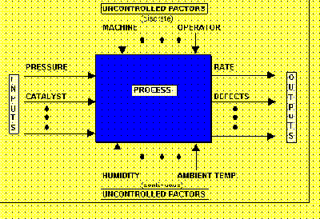

|
5.
Process Improvement
5.2. Introduction 5.2.2. What is experimental design?
|
|||
| Inputs (controlled
or uncontrolled) affect outputs
Typically, DOE's fit empirical polynomial models to connect inputs
and outputs
Issues for generating a DOE include the factors of interest and their
low to high ranges
|
One has in mind a process model
of the ‘black box’ type, with several discrete or continuous input factors
which can be controlled—that is, varied at will by the experimenter—and
one or more measured output responses. The output responses are assumed
continuous. An empirical model will be derived by experiment; the model
will be a polynomial.
In addition, one has a number of uncontrolled factors which may be either discrete, such as different machines or operators, as well as uncontrolled factors which are of the continuous type such as ambient temperature.  FIGURE 2.5 A ‘black box’ process model To run an experiment, the input factors that are to be controlled will have to be decided on. Also, the outputs that will be measured will also be decided, together with decisions about what to do with uncontrolled input, which might be either monitored, designed out of the experiment, or ignored. The low-to-high ranges, or selections, of the input factors have also to be decided, as well as safety aspects. Ownership of all experimental issues, from who is to run the experiment to who is to analyze the data are to be decided up front. An experimental design is generated, and the experiment is then run according to the plan. Data is collected and analyzed and a report on the results is made. Decisions about the next step are made and followed through. |
||